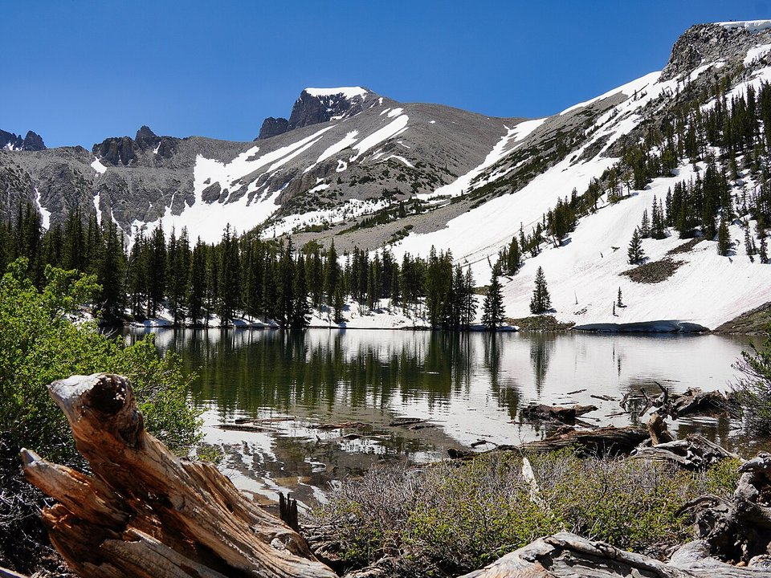

Ely · Historic hotel
Hotel Nevada
A 1929 hotel and gambling hall in downtown Ely.
Official details for Hotel NevadaAncient trees and dark skies.
Great Basin National Park protects Wheeler Peak, a 13,063-foot summit rising out of the Nevada desert, groves of bristlecone pines more than 4,000 years old, the ornate Lehman Caves and night skies dark enough to see the Milky Way cast shadows. Land at Ely, a small railroad and mining town an hour north, ride the Nevada Northern Railway’s steam train, then drive to the park for the caves, a bristlecone walk and stargazing.

Time illustration: direct distance at 150 KTAS plus 15 minutes for departure and arrival, matching the discovery page. Use ForeFlight for your actual flight plan.
KELY, Ely/Yelland Field, is a non-towered White Pine County airport at 6,260 feet with a 6,017-foot main runway. Great Basin National Park is about an hour southeast.
Ely Airport, Ely, NV
High elevation: compute performance carefully, especially on summer afternoons. Remote area with few services; call ahead for fuel and a rental car. No live fuel price is shown.
Great Basin flying: high elevations, strong westerly winds and mountain wave over the ranges, summer thunderstorms and smoke, cold winters, and long empty stretches between airports. About 1750 nm from Myrtle Beach: two long days each way with several fuel stops. Plan a week, or overnight on the way out and back.
Rates and availability need travel dates. Park lodging is limited; book early.
A 1929 hotel and gambling hall in downtown Ely.
Official details for Hotel NevadaMotels and inns in Ely and Baker.
Ely Nevada for More places to stayPrices and availability for your dates, through our partner Stay22. This is an affiliate link: we may earn a commission at no cost to you. The picks above are never paid.
Reserve weekend dinners.
Cafés and steakhouses in Ely.
Ely Nevada for RestaurantsReserve Lehman Caves tours ahead.
This prototype links to the local visitor site. It does not yet match events to your travel dates.
Telescopes and talks under dark skies.
NPS for Great Basin Astronomy FestivalAccess to the bristlecones and high trails.
NPS for Wheeler Peak road openExcursions from Ely.
Nevada Northern Railway for Steam train seasonCheck the local calendar when choosing a weekend, and confirm dates and tickets with the organizer.
A sample park weekend. This is a two-day flight each way; plan a week. No bookings or availability confirmed.
Land at KELY early and pick up the car.
Lehman Caves tour.
Back to Ely and the airport.
Land at KELY, subject to weather, density altitude and your actual flight plan.
The Nevada Northern Railway yard.
Dinner in Ely.
Drive to Great Basin and tour Lehman Caves.
The bristlecone trail.
Stargazing in the park.
A steam train ride.
Compute takeoff performance for the temperature and allow time at the FBO.
Mountain winds build by afternoon; leave early.
The bristlecone trail.
A steam train in Ely.
Stargazing in the park.
These details make the difference between an appealing list and a usable getaway.
Cave tours, lodging and a car.
About 1,750 nm from Myrtle Beach: two long days each way.
Few services; carry water and fuel up.
June to September.
Picks and links reviewed by WingAway Weekends. Hours, prices, menus and availability change often, so confirm directly with each place before booking. Spotted something out of date, or have a favorite we missed? Email us at hello@wingawayweekends.com.
WingAway Weekends helps you discover the destination. Use ForeFlight and current official aviation information for route, performance, weather, NOTAMs and preflight decisions. Flight planning and PIC responsibility stay with the pilot.